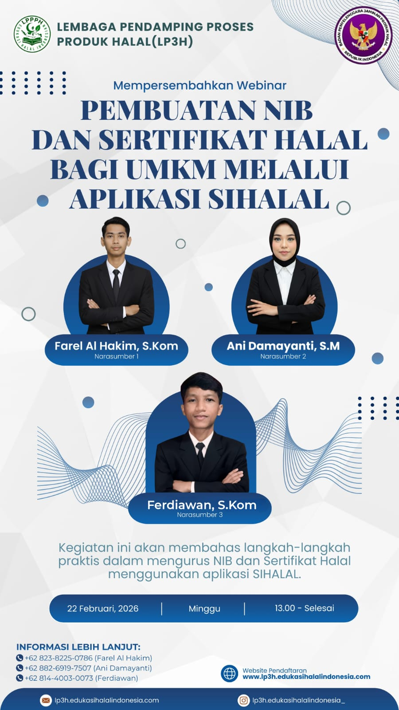

Staf Perekrutan P3H
Mendukung proses rekrutmen calon Pendamping Proses Produk Halal (P3H), mulai dari pengelolaan data pendaftaran, verifikasi dokumen, koordinasi peserta, hingga administrasi proses seleksi.


Tentang Pengalaman
Sebagai Staf Perekrutan P3H, saya terlibat dalam mendukung proses rekrutmen calon Pendamping Proses Produk Halal. Peran ini mencakup pengelolaan data peserta dan membantu memastikan proses administrasi berjalan dengan baik.
Dalam pelaksanaannya, saya melakukan pengelolaan data pendaftaran, pemeriksaan dokumen, koordinasi dengan calon peserta, serta membantu proses administrasi seleksi.
Tugas & Tanggung Jawab
Kompetensi yang Digunakan
Pengalaman ini mengembangkan kemampuan dalam pengelolaan data, administrasi, komunikasi, ketelitian, koordinasi, verifikasi dokumen, serta proses rekrutmen.